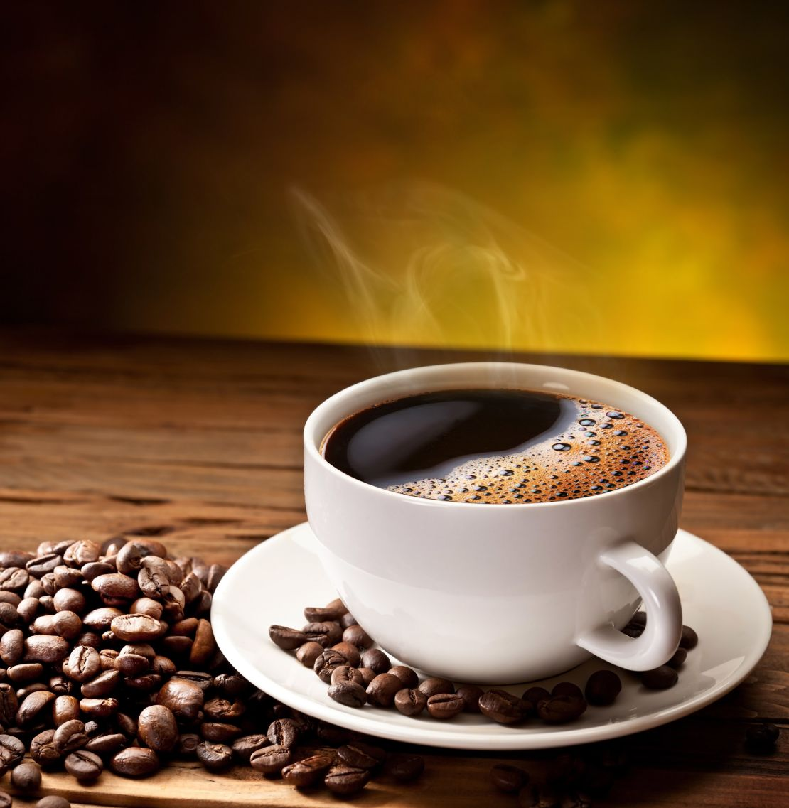
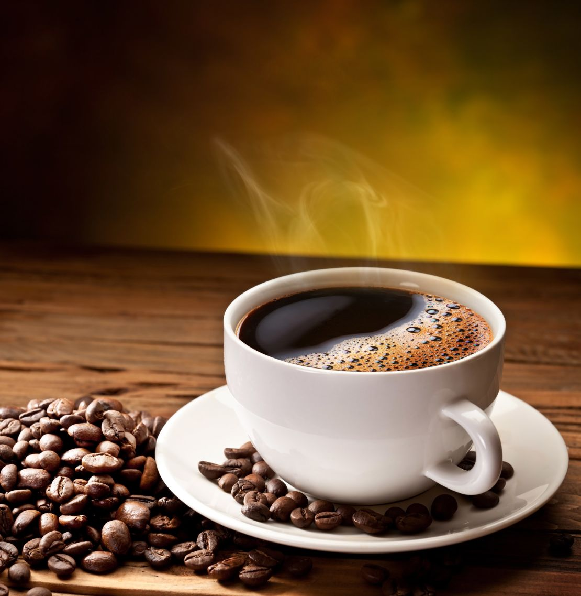

Lisää meidän kasvista
Kahvi
Suomessa kahvi ei ole pelkkä juoma, vaan tärkeä osa kulttuuria ja sosiaalista elämää. Suomalaiset juovat kahvia enemmän kuin missään muualla maailmassa – keskimäärin noin 12 kiloa vuodessa henkeä kohden, mikä tarkoittaa useita kuppeja joka päivä. Kahvitauko, jota kutsutaan nimellä 'kahvitauko' tai tuttavallisesti 'kahvipaussi', on olennainen osa työpäivää, ja se on jopa kirjattu moniin työehtosopimuksiin. Lisäksi Suomessa on tapana tarjota kahvia aina, kun vieraita tulee kylään, ja usein sen kanssa tarjotaan pullaa. Kahvi on siis suomalaisille sekä arjen voimanlähde että vieraanvaraisuuden symboli